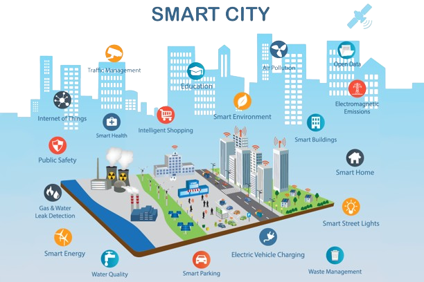
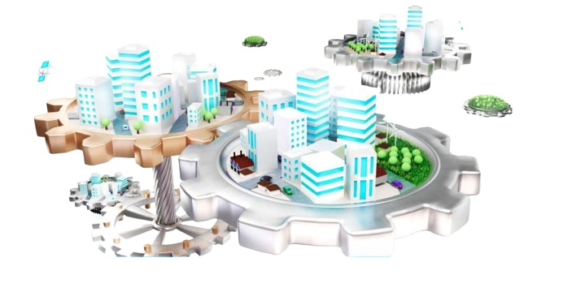
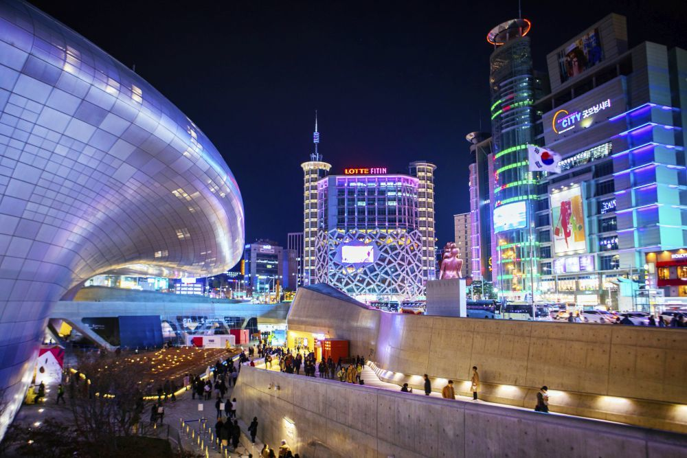
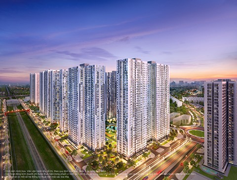
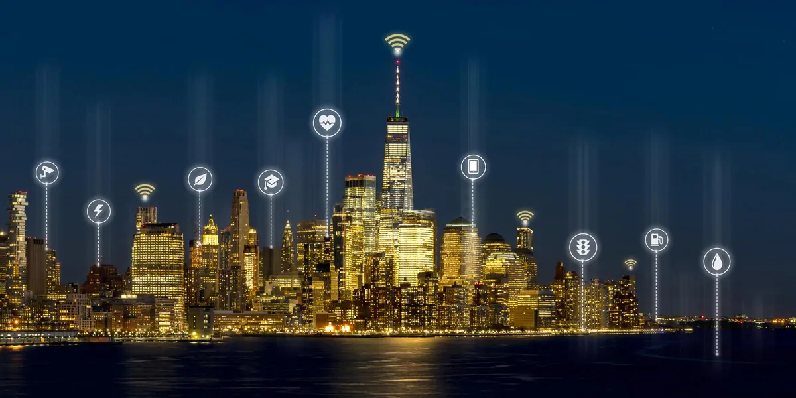

Description and Characteristics

A smart city, also known as the city of tomorrow, is a concept that aims to create more efficient, safe, and sustainable cities through the use of technology.
These cities aim to integrate various aspects of society and daily life, such as mobility, security, energy, water, infrastructure, and services.
The concept of smart city encompasses the integration of systems and technologies into urban planning, transport management, energy, water, environmental management, telecommunications, public transport, e-commerce, and entertainment.
The main axes of smart cities are efficiency, interconnectivity, security and sustainability. Some
pillars that materialize through:
The use of technologies such as drones, accident detection systems, and environmental information management systems helps local authorities make more efficient decisions about urban planning and land management.
Smart cities implement intelligent public transport systems, such as autonomous vehicles, adaptive routes, and real-time traffic information. These systems aim to improve transport efficiency, reduce congestion, and minimize environmental impact.
By using IoT-enabled smart meters and sensors, smart cities can monitor and optimize energy consumption, leading to cost savings and reduced environmental impact. Additionally, renewable energy sources like solar panels and wind turbines can be integrated into urban infrastructure to power the city.
Smart cities leverage advanced data analytics and automated control systems to monitor and manage water resources efficiently. This can help reduce water wastage, optimize irrigation systems, and maintain ecosystem health.
- Environmental Management.
The use of IoT devices, AI, and data analytics in smart cities enables the monitoring and control of pollution levels, promoting cleaner air and safer communities.
Smart cities employ advanced security systems, such as surveillance cameras, biometric authentication, and drones equipped with high-resolution cameras, to ensure the safety and security of their citizens.
Smart cities use digital health technologies, such as smart sensors and mobile applications, to track and manage the health of their residents. Additionally, they offer resources and services, such as access to healthcare facilities and fitness programs, to promote well-being.
- E-commerce and Entertainment.
Smart cities integrate cutting-edge technologies, such as AR/VR and smart devices, to enhance the digital experience in shopping, entertainment, and other activities.
In conclusion, the concept of smart city presents a unique opportunity to transform urban environments and enhance the quality of life for citizens. By implementing various technologies and systems across various sectors, smart cities can become more efficient, safe, and sustainable.
Advantages and disadvantages

To improve the quality of life of both humans and the environment we can say that there are four points of
reference: Human Aspect, Government, Environment and Economy that will imply a commitment of the different
agents involved.
We can say that this would have a lot to do with the Internet of the Future, especially with the Internet of
Things, also called IoT.
We could also say that it is a new business model and opportunity that responds to the needs of citizens
specifically and in a much better way.
For example, it would be the automatic and efficient management of urban infrastructures. In addition, we can
say of a great improvement in energy savings, improvements in energy efficiency...etc. So with these we
could also achieve very good mobility management thanks to the improvements that a Smart City would entail
in this or in terms of urban parking, which would improve traffic and thereby reduce queues to look for a
place where parking, along with fuel consumption that worsens the environmental situation so much, etc.
Therefore, Smart Cities improve urban planning and the environment. Increase and improvement of green areas,
peripheral areas...etc.
In addition, a Smart city represents a great reduction in the expenses that a property, electricity,
community, etc.
Can produce, thereby helping citizens with the expenses that they have on their
property. Reduction and optimization of time facing the consumer. Among others, we also have regulated
lighting to reduce the energy cost, both for the streets, the road or even your own home, which also reduces
the electricity bill for both municipalities and private owners, among others.
We also find some smart cards for citizens such as health cards, transportation cards, etc., which in turn
leads to a reduction in energy expenditure. On the other hand, we find cars with their own parking capable
of finding free parking spaces for users, which also leads us again to a great help for these users by not
having to spend on parking.
Although we can also find mobility systems based on the shared use of
bicycles, thus even avoiding the use of cars and thereby reducing emissions to the environment.
One of the most innovative things we find in smart cities would be the different apps to interact with the
city, being able to control our surroundings.
This would also contribute to smart water supply, smart energy management (public lighting, etc.) and more
effective waste management, thereby reducing its expense and use. We also find surveillance systems at all
levels that theoretically maximize citizen security, thus giving greater confidence to all inhabitants
regarding their city and their cohabitants.

However, in smart cities there are also a series of drawbacks closely associated with the technological
aspect that can cause setbacks in the expansion of the city due to distrust of technology due to concerns
about the data or information pie. Among them we find the following:
The Administration, since a significant investment in technology is required and many citizens see this as an
inconvenience since that money could be used for something that they consider much more important. Given so
much technology implemented in cities, we depend on companies that offer these services. Both at a public
and private level. In many cases, this is very expensive or difficult to obtain.
Furthermore, as we mentioned at the beginning, this could mean a reduction in privacy that citizens do not
like. “To be more efficient we must observe what habits the consumer has in all its aspects and levels” we
can see it in this phrase that leads us to think that all our information is controlled by someone who we do
not know what they can do with it and could even get us involved in some problem.
On the other hand, real estate is becoming more expensive. They are more complex to execute and build.
This would cause greater technological gaps between cities and realities, leading us to a kind of metaverse.
Although not all cities can bear that cost, the vast majority would be willing to do so. Due to the
complexity that Smart Cities absorb, they simultaneously produce a considerable increase in waste that leads
to greater pollution.
Obviously both the advantages and the disadvantages that we have been able to observe and that surely many
more can be listed in both cases, what we can clearly observe in Smart Cities is the need for the future to
be more efficient or to improve the environment and The natural environment.
Examples of the actuals smart cities
Some examples of this are:

In this city, an intelligent waste management system has been implemented due to the increase in waste
production in urban areas. To do this, they have placed sensors in the waste containers to measure the
filling levels and thus be able to notify when the containers are ready to be emptied.

En Miami encontramos también el sistema de alumbrado público inteligente. Este consta de cambiar el sistema
a LED además de una buena conexión. Por otro lado, pueden ajustar automáticamente su brillo según los
períodos de inactividad y pueden transmitir información de mantenimiento para tiempos de respuesta más
rápidos. Con esto podemos reducir los costos de energía y mantenimiento.
Here we find the London Development Database (LDD), a collaborative project for the management of
construction permits and their different phases in real time, which can be accessed by any citizen through
the web.
- New York in United States

Equal access to technology has been expanded through the LinkNYC network, which replaces telephone booths
with fast and free Wi-Fi access points to access city services. Regarding traffic, the city applied the
Midtown in Motion program to manage rush hours in the center. Using speed sensors and a data center managed
by urban traffic engineers, a 10% improvement in travel times has been achieved.

Paris has promoted an IoT infrastructure, through which it seeks to optimize traffic and people flows. In
addition, a complete restructuring of the transport system has been planned through the Grand Paris Express,
which will include among the initiatives a 100% automated metro thanks to Big Data.
The future of the tecnology
To face the changes that are presented to us, things are being proposed such as changing the energy model,
the search for increasingly sustainable urban mobility, automation and improving information management and
public infrastructure, among others. Great challenges that can only be achieved by betting on the two key
elements of this so-called “4.0 revolution”: innovation and technology.
Therefore, smart cities will attempt to achieve greater efficiency in their planning, use and management and
greater interaction and quality of life for their citizens. They will undoubtedly have to bet on these
implementations linked to sustainability, which will experience exponential growth in the coming years. And
thus, implement solutions to reduce their greenhouse gas emissions by 20%, increase the quotas of renewable
energy to 20% of consumption, or establish a minimum quota of 10% in the transportation sector, among
others.
But they will not be the only changes that are coming and that will help create more sustainable cities in
the future. The growth of secondary raw materials industries, the rise of bioclimatic architecture, the
development of Open Data platforms and the implementation of ICTs that facilitate smart government... all of
them will be necessary changes, which are added to those already mentioned and which all smart cities will
experiment in the coming years.
Therefore, we can say that sustainability will be a value that is increasingly in demand by both governments
and society, as well as a factor that will undoubtedly be taken into account when establishing increasingly
restrictive laws. Therefore, the companies with the best reputation and best value, and those that will be
worth investing in, will be the ones that adapt to these changes for a more sustainable future.
References